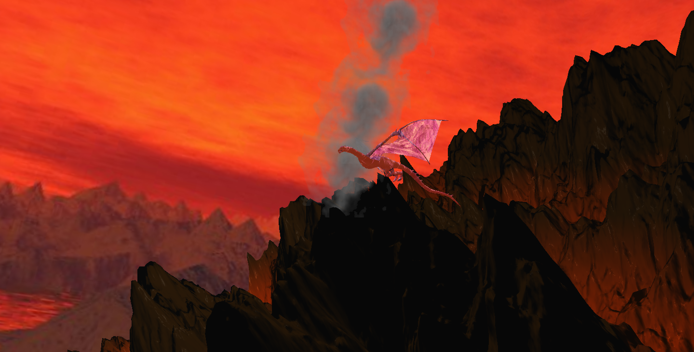

Jan. 2024 - May 2024
OpenGL Dragon Final
Computer Graphics

- Utilized perlin noise and skybox to simulate mountainous terrain for the scene
- Implemented alpha blending and texture mapping to make the dragon appear crystalized
For a more detailed explanation, feel free to check out my Project Log!
Aug. 2023 - Dec. 2023
Dungeon Crawler
CS 2340 Objects and Design
- Led a 6-person team in a semester-long project while setting clear milestones
- Applied Agile, iterative design methods to manage workload and flow
- Designed code solutions utilizing software design patterns and team strengths
For a more detailed explanation, feel free to check out my Project Log!
April 2022 - May 2022
Chasing Daybreak
CS 2261 Media Device Architecture
- Coded a video game from scratch in 1 month
- Programmed with a GameBoy Advance (GBA) emulator in the programming language C
- Applied bitwise operations, memory mapping, and low-level hardware programming
For a more detailed explanation, feel free to check out my Project Log!
To play, press "Run it anyway."
A = Z
Pause = Backspace